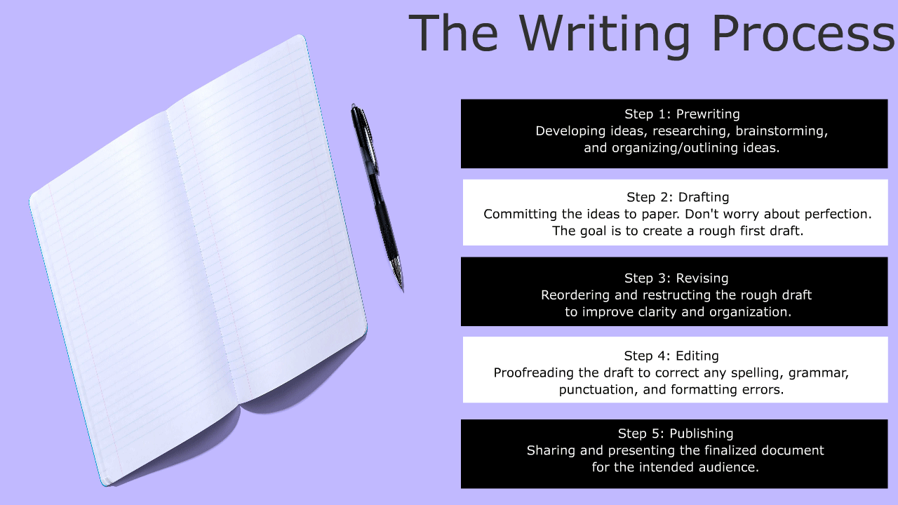

This is an animated infographic created for the Young Writers of Tomorrow nonprofit organization.
Purpose of the Project
This project aims to create an animated infographic that explains the writing process for the nonprofit organization Young Writers of Tomorrow. The objective is to present the writing process in simple, easy-to-understand terms.
Tools and Skills Used
- Selection Tool: Used to move elements around the stage and select objects for conversion into symbols.
- Free Transform Tool: Used to resize and rotate different elements on the stage.
- Text Tool: Used to create all text displayed within the infographic.
- Rectangle Primitive Tool: Used to create the visual steps of the writing process and take advantage of its editing capabilities.